Ratchet Lady su Wolfe Asylum. Su 150 partite registrate si vince nel 50,0% dei casi, 15,3 punti sotto la media del gioco (65,3%).
Cosa la rende particolare
Si cura senza limiti finché non la attacchi. Carte Amped (azioni potenziate) tramite il sistema di pillole. Descritta come imprevedibile: dipende moltissimo da quanto presto la affronti.
Livello
Avanzato
La mappa
Sistema di pillole e carte Amped, carta "Final Girl 2.0"
Come funziona Ratchet Lady
Movimento base: non si muove nella sua Killer Action; attacca chi si trova nel suo spazio.
È accompagnata da Minions chiamati Maniacs; hai accesso alle carte Azione Calm.
Prima del Finale: Minions: Target Final Girl > Move; Killer: Target Final Girl or Victim > Attack.
20 spazi e 3 uscite (in alto a sinistra, in basso al centro e a destra al centro). Spazi di ricerca: Doctor's Office, Utility Closet e Medical Storage; altri luoghi con nome: Operating Theater, Common Room e Solitary Confinement.
Include le meccaniche Pills e Stunned.
Raccogliere una Pill costa 1 Time dopo aver terminato il movimento nel suo spazio; il colore si rivela raccogliendola.
Una Pill: Yellow 1 Health, Purple muovi di 1 spazio, Pink -1 Horror; nessuna carta Side Effects.
Due Pills danno effetti più forti e fanno pescare 2 Side Effects; tutte e tre (Yellow + Purple + Pink) danno una carta Amped e 3 Side Effects.
Carte proprie: Amped (5), Side Effects (10), Pills
Ratchet Lady ha il 66,6% di vittorie su tutte le mappe, su 694 partite. Qui, su Wolfe Asylum, la cifra è 50,0%.
Setup
Dal più duro al più facile. Almeno 20 partite.
Setup
Vittorie
Partite
Padded Rooms
60,9%
184
Bingo Night
61,5%
187
Madhouse Faceoff
61,9%
168
A Solitary Life
65,8%
149
The Dr. Is In
67,1%
149
Dark Powers
Dark Power
Vittorie
Partite
Shield of Madness
54,9%
111
Manic Burst
65,5%
171
Dark Injection
68,7%
147
Bloodfear
70,2%
134
Unrevealed
71,2%
125
Carte Finale
Carta Finale
Vittorie
Partite
Hold Her Down
62,9%
105
It's Raining Maniacs
64,7%
102
Unrevealed
65,4%
335
Feed the Madness
68,3%
101
Enter the Madhouse
80,0%
45
Consigli di chi l'ha giocata
Non ti insegue di persona; manda i Maniacs che vengono solo per te, senza tregua. E attenzione: i Maniacs causano perdita di salute diretta, che NON si può bloccare con Guard o Retaliate. Le carte difensive servono a poco qui. Punta sulla mobilità, salva in fretta e tieni sempre un attacco in mano.
Cosa dicono le recensioni
Molto apprezzata per il design, e una delle più difficili del gioco. Tre recensioni concordano: il manicomio e le pillole piacciono, Ratchet Lady frustra. Non è una scatola da cui iniziare.
Dove trovarla
Link di affiliazione: se compri, ricevo una piccola commissione senza costi in più per te. Non cambia quello che dicono i dati sopra.
Nomi delle carte dall'edizione spagnola · ⌛ = Tempo · ✴ = danno · ❤️ = recuperare salute · 💔 = perdere salute · 🎭 = l'Orrore sale · 🩸 = Bloodlust · 💊 = segnalino Pastilla (pillola)
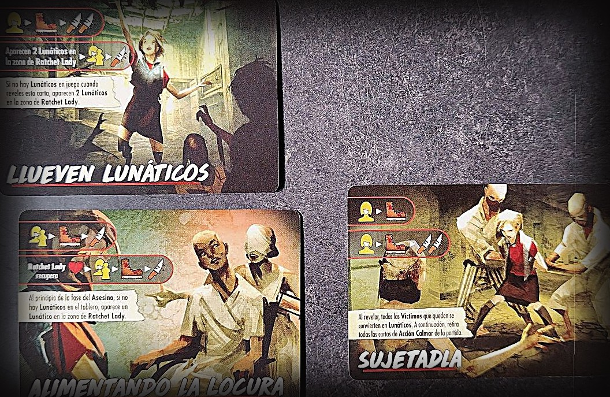
Attenzione
Ratchet Lady inizia con solo 6 di salute ma non ha limite massimo: si cura in molti modi.
Lasciare un luogo con dei Lunáticos (pazzi) costa 💔 per ogni Lunático oltre il primo.
Trasformare una Vittima in Lunático non fa salire il 🩸, e nemmeno uccidere un Lunático.
Preparazione speciale
Fai una pila con le miniature di Lunático accanto a quelle delle Vittime.
Metti 2 Lunáticos nel luogo di partenza di Ratchet Lady.
I Lunáticos
Sono Scagnozzi: ex Vittime impazzite. Seguono le regole degli Scagnozzi (pag. 32 del regolamento base).
Hanno 1 di salute, e Attacco e Movimento 1. Non ti seguono e non possono essere salvati.
Quando una Vittima diventa un Lunático, sostituisci la sua miniatura con una rossa di Lunático. Il 🩸 non sale: non è morto nessuno.
Quando un Lunático muore, la sua miniatura torna nella riserva. Neanche così sale il 🩸, anche se prima era una Vittima.
Se vuoi lasciare un luogo con dei Lunáticos, perdi 💔 per ogni Lunático oltre il primo: con uno non succede nulla, con tre perdi 2.
Massimo 6 Lunáticos contemporaneamente sul tabellone. Se devi metterne un altro e non ne restano, ignoralo.
Le Vittime Speciali non diventano Lunáticos; solo quelle normali.
Calmar
Contro Ratchet Lady hai le carte Azione Calmar (calmare), che ritrasformano i Lunáticos in Vittime.
Quando risolvi con successo una Calmar, sostituisci il numero di Lunáticos indicato con miniature di Vittima e rimetti i Lunáticos nella riserva. Ora possono seguirti, puoi salvarle e i Nemici possono ucciderle.
Finales
Llueven Lunáticos: sopra, viene verso di te, si muove e attacca 2 volte. Sotto, compaiono 2 Lunáticos nel suo luogo, va verso la Vittima o verso di te e attacca. Se non ci sono Lunáticos quando viene rivelata, ne compaiono 2 nel luogo di Ratchet Lady.
Alimentando la Locura: sopra, va, si muove e attacca. Sotto, Ratchet Lady recupera ❤️, poi va, si muove e attacca. All'inizio di ogni fase del Killer, se non ci sono Lunáticos, ne compare uno nel suo luogo.
Sujetadla: sopra, viene verso di te e si muove. Sotto, viene verso di te, si muove e attacca 2 volte. Quando viene rivelata, tutte le Vittime rimaste diventano Lunáticos e tutte le carte Azione Calmar vengono rimosse dalla partita.
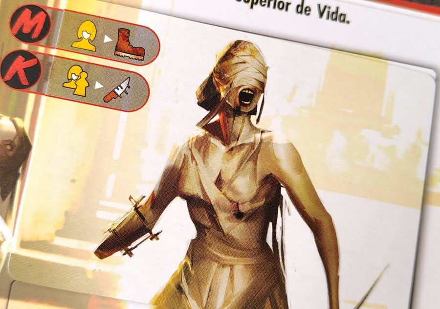
Finale
Poteri oscuri
Inyección Oscura: nella fase del Killer, la prima volta che Ratchet Lady recupera almeno 1 ❤️, ne recupera un altro.
Brote Maníaco: quando un Lunático entra sul tabellone, attiva subito la sua Azione da Scagnozzo.
Miedo a la Sangre: nella fase del Killer, la prima volta che l'Orrore o il 🩸 salgono di almeno 1, Ratchet Lady recupera ❤️.
Escudo de Locura (Potere Oscuro Epico): Ratchet Lady non può perdere salute finché ci sono Lunáticos sul tabellone.
Raccogli una 💊 solo se termini il movimento nel suo luogo, non se ci passi soltanto.
Prendere 2 o 3 Pastillas insieme ti obbliga a pescare carte Efectos Secundarios (effetti collaterali).
Preparazione speciale
Fai una pila con i segnalini Aturdido (stordito) accanto all'area di gioco.
Mescola i segnalini Pastilla a faccia in giù (lato neutro in alto) e fai una pila.
La partita inizia con 4 segnalini Pastilla sul tabellone: la carta Preparazione indica dove. Pescali dalla pila e mettili a faccia in giù.
Metti la carta Efectos de las Pastillas accanto alla tua plancia giocatore. Pesca 1 segnalino Pastilla e mettilo a faccia in su sotto di essa. Nella riserva dovrebbero restarne 5.
Mescola i mazzi Dopaje ed Efectos Secundarios e mettili accanto all'area di gioco.
Pastillas, Efectos Secundarios e Dopaje
Ci sono 4 tipi di Pastillas: 3 gialle, 3 blu, 3 rosa e 1 jolly (vale come qualsiasi colore).
Se termini il movimento in un luogo con un segnalino Pastilla (non di passaggio), puoi spendere ⌛ per prenderlo. Mettilo a faccia in su sotto la tua carta Efectos de las Pastillas.
In qualsiasi momento della fase Azione puoi prendere quelle che hai raccolto, scartandone i segnalini. Se la pila finisce, mescola quelli scartati e fanne una nuova a faccia in giù.
Guarda la carta Efectos de las Pastillas per vedere cosa fa ciascuna. Se ne prendi 2 o 3 insieme, dopo averne applicato gli effetti peschi 1 o più carte Efectos Secundarios, una alla volta.
Puoi prenderne quante vuoi e nell'ordine che vuoi: per esempio una sola, e poi due insieme (pescando Efectos Secundarios per quelle due).
Se ne prendi una di ogni colore, puoi pescare una carta Dopaje: danno abilità molto potenti.
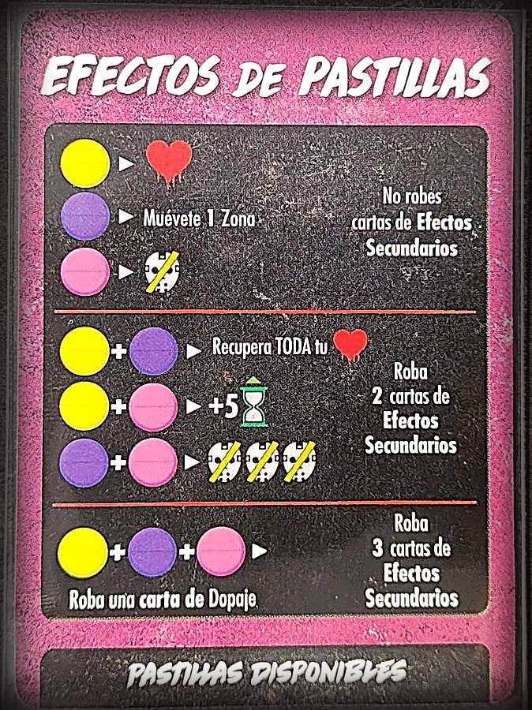
Efectos de Pastillas
Aturdido
Alcuni oggetti riportano la parola Aturdido. Solo i Nemici possono diventare Aturdido: metti un segnalino Aturdido sotto di loro.
Nella fase del Killer successiva, ignora tutti i loro movimenti (ma risolvi comunque i loro attacchi).
Nel Mantenimento si scartano tutti i segnalini Aturdido.
Preparazioni
K = partenza del Killer · figura gialla = la Final Girl · numeri = Vittime per spazio.
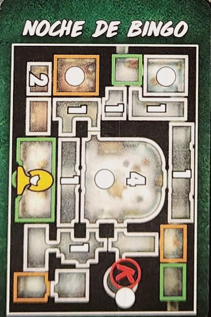
Noche de Bingo
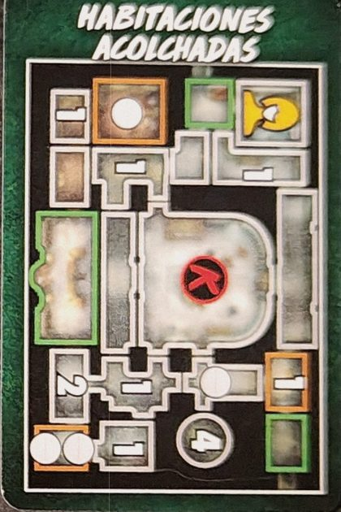
Habitaciones Acolchadas
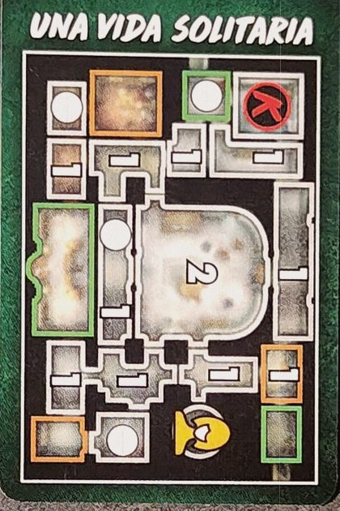
Una Vida Solitaria
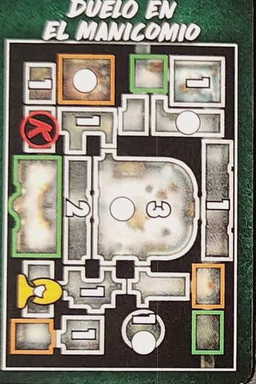
Duelo en el Manicomio
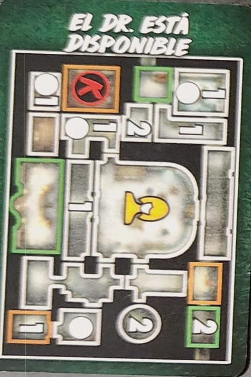
El Dr. está Disponible
Oggetti
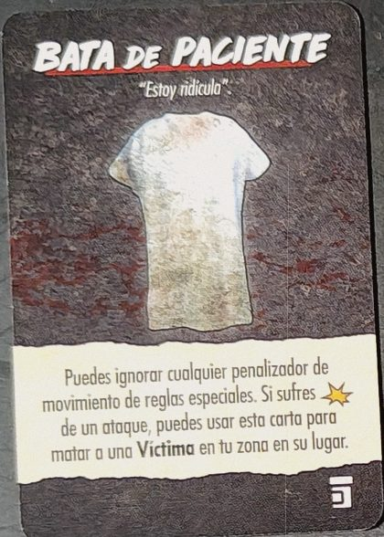
Bata de Paciente
Puoi ignorare qualsiasi penalità di movimento delle regole speciali. Se subisci ✴ da un attacco, puoi usarla per far morire al tuo posto una Vittima del tuo luogo.
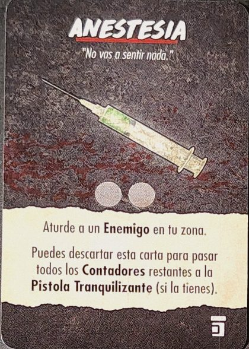
Anestesia
2 usi. Stordisce un Nemico nel tuo luogo. Puoi scartarla per passare tutti i suoi usi rimanenti alla Pistola Tranquilizante (se ce l'hai).
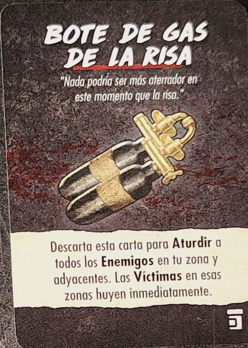
Bote de Gas de la Risa
Scartalo per Stordire tutti i Nemici nel tuo luogo e in quelli adiacenti. Le Vittime in quei luoghi fuggono subito.
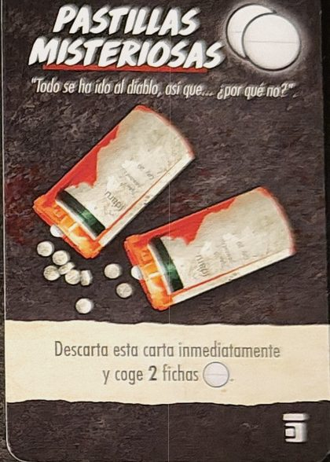
Pastillas Misteriosas
Scartala subito e prendi 2 segnalini Pastilla.
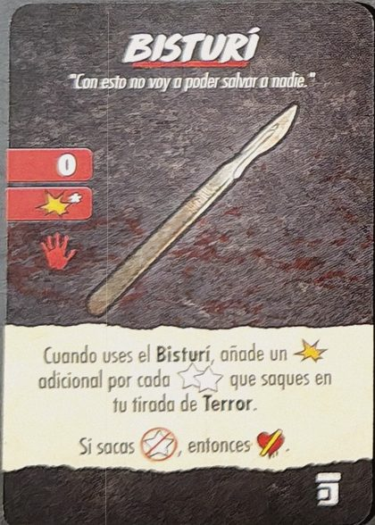
Bisturí
Arma · gittata 0 · ✴* · 1 mano. Infliggi 1 ✴ in più per ogni stella vuota che ottieni nel tuo Tiro Orrore. Se ottieni l'icona barrata, 💔.
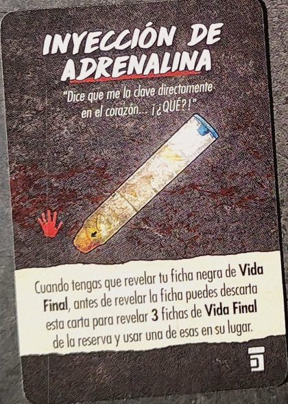
Inyección de Adrenalina
1 mano. Quando devi rivelare il tuo segnalino Final Health nero, prima puoi scartarla per rivelarne 3 dalla riserva e usarne uno.
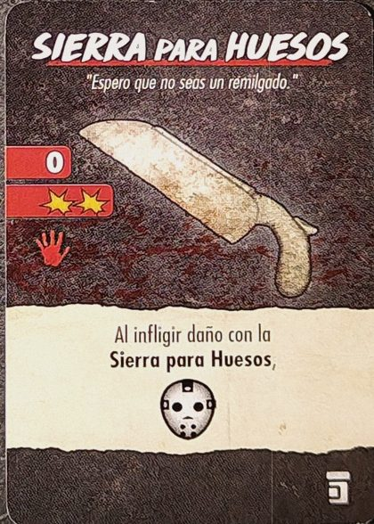
Sierra para Huesos
Arma · gittata 0 · 2 ✴ · 1 mano. Quando infliggi danno con essa, 🎭.
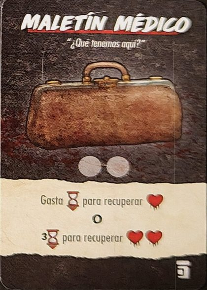
Maletín Médico
2 usi. Spendi ⌛ per recuperare ❤️, o 3 ⌛ per recuperare ❤️❤️.
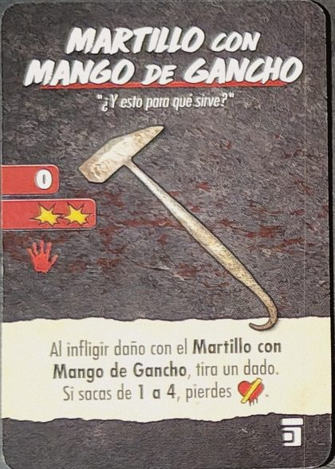
Martillo con Mango de Gancho
Arma · gittata 0 · 2 ✴ · 1 mano. Quando infliggi danno con esso, tira un dado: con 1-4, 💔.
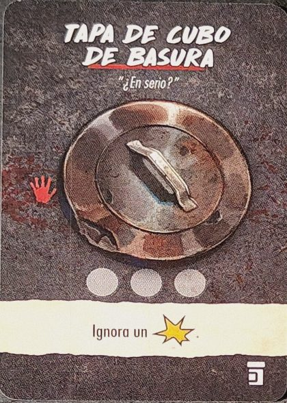
Tapa de Cubo de Basura
1 mano · 3 usi. Ignora 1 ✴.
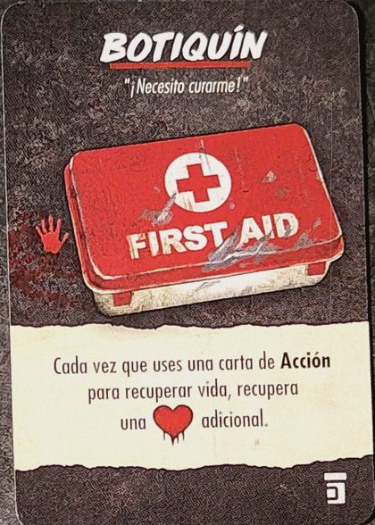
Botiquín
1 mano. Ogni volta che usi una carta Azione per recuperare salute, recuperi ❤️ in più.
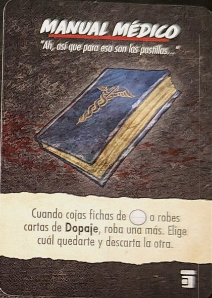
Manual Médico
Quando prendi segnalini Pastilla o peschi carte Dopaje, pescane uno in più, scegli quale tenere e scarta l'altro.
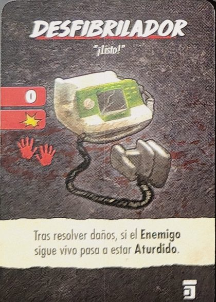
Desfibrilador
Arma · gittata 0 · 1 ✴ · 2 mani. Dopo il danno, se il Nemico è ancora vivo, è Stordito.
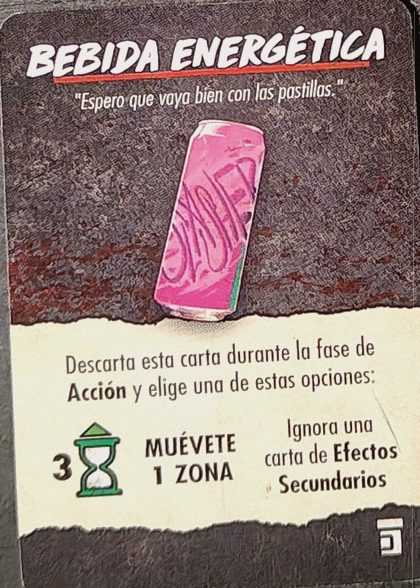
Bebida Energética
Scartala nella fase Azione e scegli: 3 ⌛, muoviti di 1 luogo, o ignora una carta Efectos Secundarios.
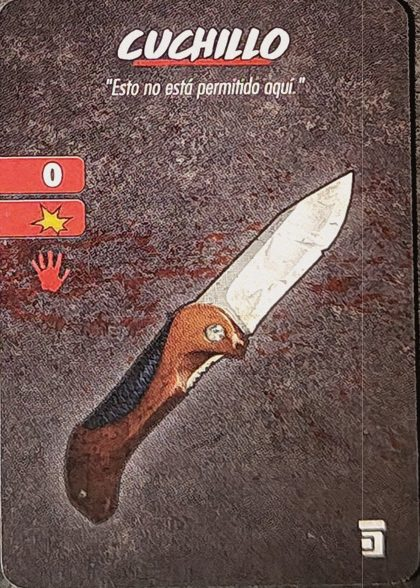
Cuchillo
Arma · gittata 0 · 1 ✴ · 1 mano.
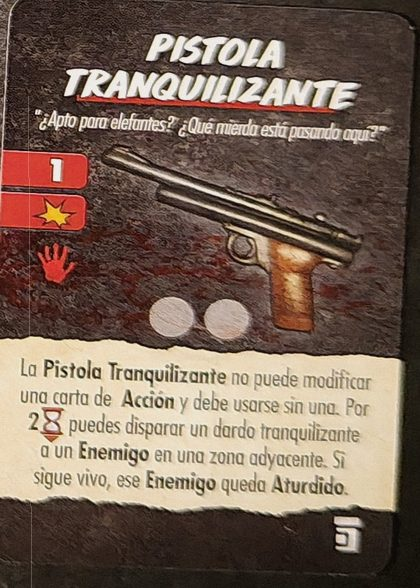
Pistola Tranquilizante
Arma · gittata 1 · 1 ✴ · 1 mano · 2 usi. Non può modificare una carta Azione: si usa senza. Per 2 ⌛ spari un dardo a un Nemico in un luogo adiacente; se è ancora vivo, è Stordito.
Nomi dall'edizione spagnola. Ci sono altre carte Pastillas Misteriosas.
Eventi di Wolfe Asylum
Dr. Death
Mettilo nella Sala de Operaciones. Nel Mantenimento uccide una Vittima nel suo luogo; se non ce ne sono, si muove di un luogo verso la Vittima più vicina. Se muore: 2 ⌛ e il 🩸 non sale. Se esce dal gioco, scarta la carta.
Arañazos y Mordiscos
Ogni volta che salvi una Vittima, fai un Tiro Orrore. Se ottieni l'icona indicata sulla carta, 💔.
Medicamentos Potentes
Ogni volta che prendi una o più Pastillas, pesca una carta Efectos Secundarios in più.
Reservas Médicas
La prima volta in una fase che tu o un Nemico recuperate almeno 1 ❤️, ne recuperate un altro.
"Han llegado los nuevos pacientes"
Metti 4 nuove Vittime nella Sala Comunitaria. Scarta.
Adicción Peligrosa
Scegli fino a 2 Vittime che non siano nel tuo luogo né insieme. Metti un segnalino Pastilla a faccia in giù con entrambe, con una o con nessuna. Per ogni segnalino che metti, +🩸. Scarta.
Camilla de Hospital
Metti il segnalino Camilla nel tuo luogo. Puoi muoverlo con te e trasportarci sopra fino a 2 Vittime. Puoi scartarlo per travolgere un Nemico nel tuo luogo o in uno adiacente: 1 ✴ in più per ogni Vittima sopra, che muoiono. Se esce dal gioco, scarta la carta.
Hannibal el Caníbal
Mettilo nel Confinamiento Solitario con 2 nuove Vittime. Nel Mantenimento uccide una Vittima nel suo luogo; se non ce ne sono, fugge. Se lo salvi, 🎭. Se viene ucciso, 💔. Se esce dal gioco, scarta la carta.
Bienvenidos al Manicomio
Metti un segnalino Teschio nella Sala Comunitaria. Quando tu o un Nemico entrate in quel luogo, chi entra subisce ✴.
Dra. Sunshine
Mettila nella Consulta Médica. Se è nel tuo luogo, quando prendi una Pastilla ne scegli il colore. Se viene uccisa nel tuo luogo, 🎭🎭🎭🎭. Se esce dal gioco, scarta la carta.
Testo nostro, dal regolamento, dalle carte e dalla wiki. Nomi delle carte in inglese. Un errore? Faccelo sapere.